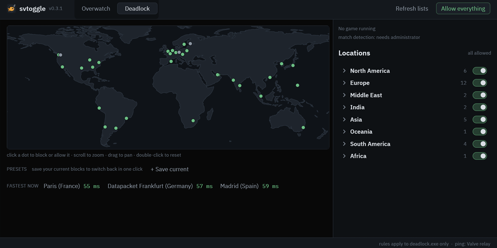

Deadlock & Overwatch server selector for Windows
Your ping deserves better than a server three countries away. Pick which regions you can be matched on, block the rest, and see the ping to each one on a world map.
Beta, honestly. svtoggle blocks the server addresses it knows about. It can't force the game to pick a region, and Deadlock blocking and match detection are still experimental. Better you hear it here than in a one-star review.

What it does
Deadlock, city by city
Every Valve relay city gets its own switch: Frankfurt, Stockholm, Dubai, Sydney, the lot. Real ping to each one, measured, not vibes.
Overwatch regions
NA, Europe, Middle East, Asia, Brazil, Australia and friends. Battle.net and Steam installs both work, and if it can't find your game, Locate game sorts it out. Pings here are estimates from the nearest AWS region, and the app says so.
World map
Click a dot, it's blocked (that's the red ×). Click again, it's back. Europe is crowded, so zoom in.
Presets
Save "EU only" once, flip back to it forever. Works from the tray too.
Firewall rules only
No injection, no memory reading, no touching game files. Just Windows Firewall rules that only apply to the game's exe, so the rest of your PC never notices.
Won't let you throw
Blocking in the middle of a match asks first. A dropped comp game is a leaver penalty, and nobody wants to explain that one.
Spots your match (experimental)
While you play, it tries to tell you which region you landed on. Tries. It's upfront about that.
Your nearest servers stay safe
List the ranges you never want blocked in protect.txt. They get stripped from every region, even after a list refresh.
How to use it
- Download the release ZIP and unzip it anywhere. Run
powershell -File install.ps1once if you never want to see a UAC prompt again, or just runsvtoggle-gui.exe(orsvtoggle-portable.exefor a USB stick). - Run it. Without the installer it asks for admin each launch. Firewall rules need it; we don't make the rules.
- Switch off the regions you don't want, then queue a new match. If the game was already open, restart it first.
FAQ
How do I change my server region in Deadlock?
Valve removed citadel_region_override, so the console just says unknown command now. svtoggle blocks the relay cities you don't want, so the game can't connect to them. What the game does next (another region, or a long sad loading screen) is up to the game, which is why this part is still experimental.
How do I block Overwatch Middle East (or any region) servers?
Overwatch tab, flip Middle East off, done. The rule only applies to Overwatch.exe, so Discord and your browser don't even notice.
Can this get me banned?
It doesn't touch the game or read its memory. It only adds Windows Firewall rules, same idea as a router geo-filter. Still, use it at your own risk, and don't flip regions in the middle of a competitive match: a dropped game can count as leaving. svtoggle asks first if it sees you're in one.
The game hangs on "connecting". What now?
You probably blocked everywhere it wanted to go. Hit Allow everything, then block a little less greedily.
How do I undo everything?
Allow everything turns every rule off. install.ps1 -Uninstall removes all svtoggle firewall rules, the scheduled task, the shortcuts and the program folder, then checks it actually did. Your settings in %APPDATA%\svtoggle stay (delete the folder if you want them gone), and firewall rules you made yourself are never touched.
Does it work on Linux or Mac?
Windows 10/11 only. It's built on Windows Firewall, so the penguin and the apple are out of luck. Sorry.